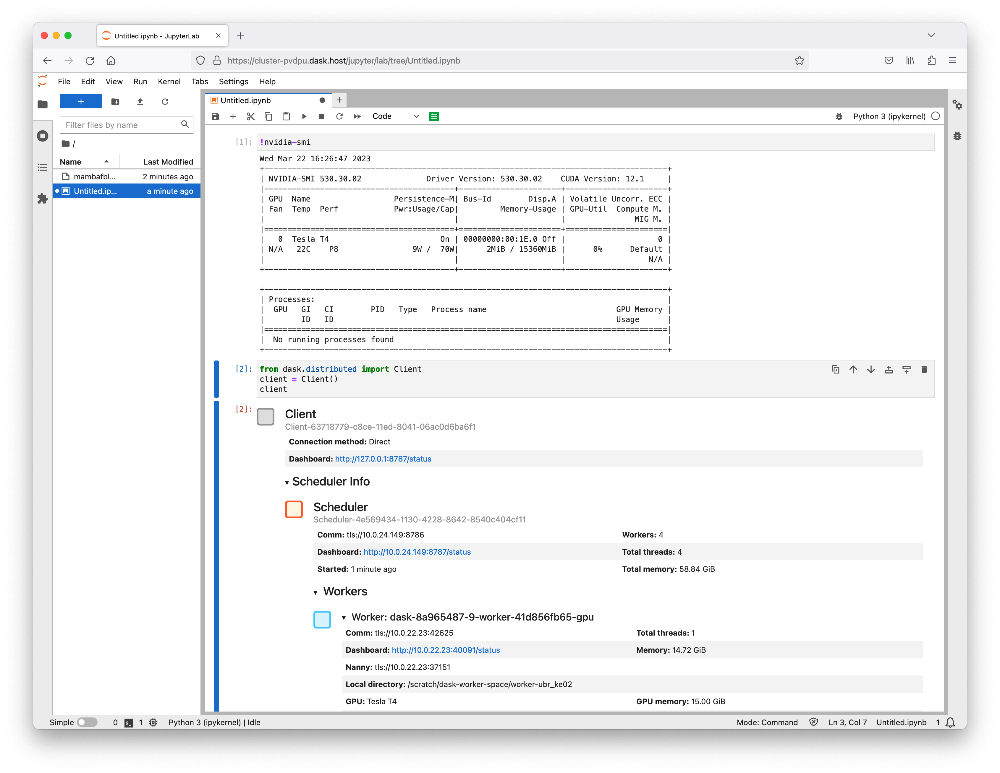

Coiled#
You can deploy RAPIDS on a multi-node Dask cluster with GPUs using Coiled.
By using the coiled Python library, you can setup and manage Dask clusters with GPUs and RAPIDs on cloud computing environments such as GCP or AWS.
Coiled clusters can also run Jupyter which is useful if you don’t have a local GPU.
Quickstart#
Login#
To get started you need to install Coiled and login.
$ conda install -c conda-forge coiled
$ coiled setup
For more information see the Coiled Getting Started documentation.
Software Environment#
Next you’ll need to register a RAPIDS software environment with Coiled.
You can either build this from the official RAPIDS Container images.
import coiled
coiled.create_software_environment(
name="rapids-23-04-nightly",
container="rapidsai/rapidsai-core-nightly:23.04-cuda11.8-runtime-ubuntu22.04-py3.10",
)
Or you can create it with a list of conda packages in case you want to customize the environment further.
import coiled
coiled.create_software_environment(
name="rapids-23-04-nightly",
gpu_enabled=True, # sets CUDA version for Conda to ensure GPU version of packages get installed
conda={
"channels": ['rapidsai-nightly', 'conda-forge', 'nvidia'],
"dependencies": ['rapids=23.04', 'python=3.10', 'cudatoolkit=11.5', 'jupyterlab'],
},
)
Note
If you want to use the remote Jupyter feature you’ll need to ensure your environment has jupyterlab installed which is included in the container image but not the conda package so it needs to be specified.
Cluster creation#
Now you can launch a cluster with this environment.
cluster = coiled.Cluster(
software="rapids-23-04-nightly", # specify the software env you just created
jupyter=True, # run Jupyter server on scheduler
scheduler_gpu=True, # add GPU to scheduler
n_workers=4,
worker_gpu=1, # single T4 per worker
worker_class="dask_cuda.CUDAWorker", # recommended
environ={"DISABLE_JUPYTER": "true"}, # needed if using environment built from RAPIDS container image
)
Once the cluster has started you can also get the Jupyter URL and navigate to Jupyter Lab running on the Dask Scheduler node.
>>> print(cluster.jupyter_link)
https://cluster-abc123.dask.host/jupyter/lab?token=dddeeefff444555666
We can run !nvidia-smi in our notebook to see information on the GPU available to Jupyter.
We can also connect a Dask client to see that information for the workers too.
from dask.distributed import Client
client = Client
client

From this Jupyter session we can see that our notebook server has a GPU and we can connect to the Dask cluster with no configuration and see all the Dask Workers have GPUs too.